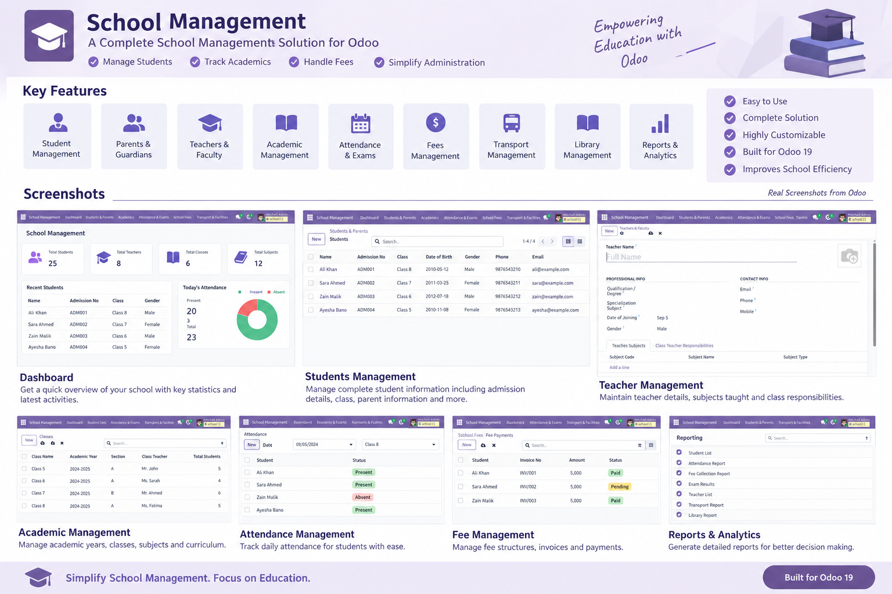
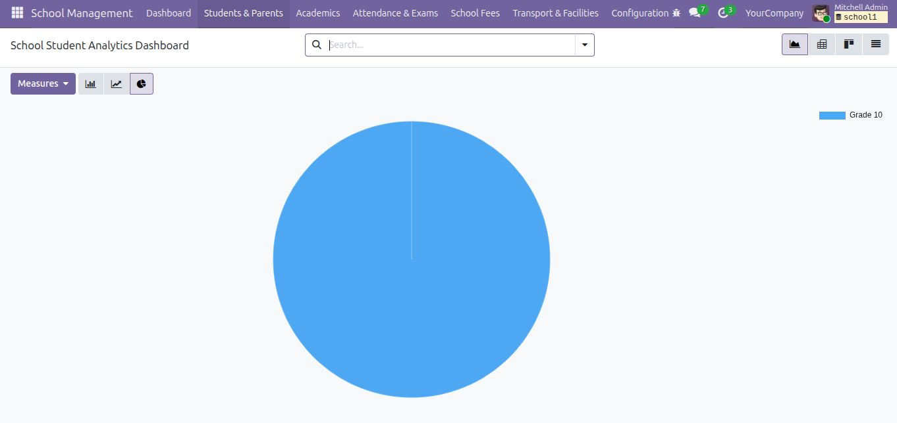

School Management System
A complete school administration solution for Odoo 19 to manage students, parents, teachers, academics, attendance, examinations, fees, transport, hostel and library operations in one integrated application.
Odoo 19EducationComplete School WorkflowLGPL-3About This Module
School Management System centralizes the core activities of a school in Odoo. Administrators and staff can manage academic structures, student records, faculty, attendance, examinations, fees and school facilities using connected records, searchable lists, forms, analytical views and printable reports.
Key Features
Student Management
Manage admission details, class, grade, academic year, roll number, guardians, contact information and enrolment status.
Parents & Guardians
Maintain guardian relationships, contact details, occupation and emergency information.
Teachers & Faculty
Manage qualifications, specialization, contact information, subjects taught and class responsibilities.
Academic Management
Configure academic years, terms, grade levels, classes, sections and subjects.
Attendance
Record daily student attendance with Present, Absent, Late and Excused statuses.
Examinations
Manage exams, marks, grading scales, percentages, grades and student results.
Fee Management
Create fee structures and track invoices, payments and outstanding amounts.
Transport & Hostel
Manage vehicles, routes, drivers, hostel rooms, wardens and student allocations.
Library
Manage books and student issue/return records with due-date tracking.
Student Management
Complete Student Profile
The student form brings academic and personal information into one record.
- Grade and class/section
- Roll number and academic year
- Admission date and enrolment status
- Date of birth, gender and contact details
- Parent & guardian information
- Contact/address and notes

Teacher & Faculty Management

Organize Your Faculty
Maintain professional and contact information for teachers and connect them with subjects and class responsibilities.
- Qualification / degree
- Specialization subject
- Date of joining and gender
- Email, phone and mobile
- Subjects taught
- Class teacher responsibilities
Subjects & Courses
Curriculum Configuration
Configure subject code, name, subject type, pass marks and maximum marks. Subjects can then be used across classes and examinations.

Attendance & Examination
Daily Attendance
Create attendance registers by class and date, load students from the class roster and record their status.
Examination Results
Record subject-wise marks and calculate maximum marks, pass marks, obtained marks, percentage and grade.

Academic Report Card

The report presents student identity, registration ID, roll number, class/section and academic year together with subject-wise maximum marks, pass marks, obtained marks and result status.
Student Analytics

Visual Analysis
Use Odoo analytical views to review student data through graphical and pivot-style analysis and gain a quick overview of school information.
Fee Management
Track Fees & Outstanding Amounts
Fee records provide invoice number, student, class/section, invoice date, due date, total amount, amount paid, amount due and status.

Fee Financial Analytics

Reports
Student ID Card
Generate a printable student identification report.
Academic Report Card
Print examination results with subject-wise marks and status.
Fee Payment Receipt
Generate printable fee payment documentation.
Complete School Workflow
Technical Information
| Module | school_management |
| Version | 19.0.1.0.0 |
| Odoo | 19.0 |
| Category | Education |
| Dependency | base |
| License | LGPL-3 |
| Application | Yes |
Installation
Support & Contact
For installation, configuration, customization or support:
Email: info@smartdesksolutions.com
Phone: +966 56 079 2470
Smart Desk Solutions
School Management System for Odoo 19 • Simplify School Management. Focus on Education.